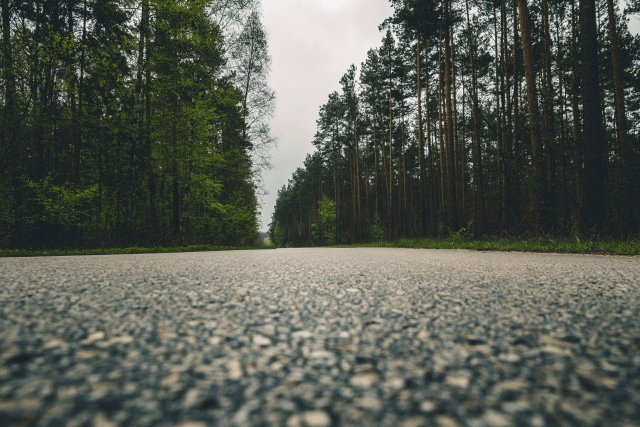

Фритрек и нулевой спринт: Подготовка к работе

Это было самое начало пути. На этом этапе важно было проникнуться основами и настроиться на учёбу. И, возможно, подумать, как новые знания могут повлиять на ваше будущее.
Время оглянуться назад с благодарностью. То самое «начало пути» было прекрасно своей чистотой. Тогда главным было не ускоряться, а проникнуться основами, впустить процесс и настроиться на учёбу как на приключение.